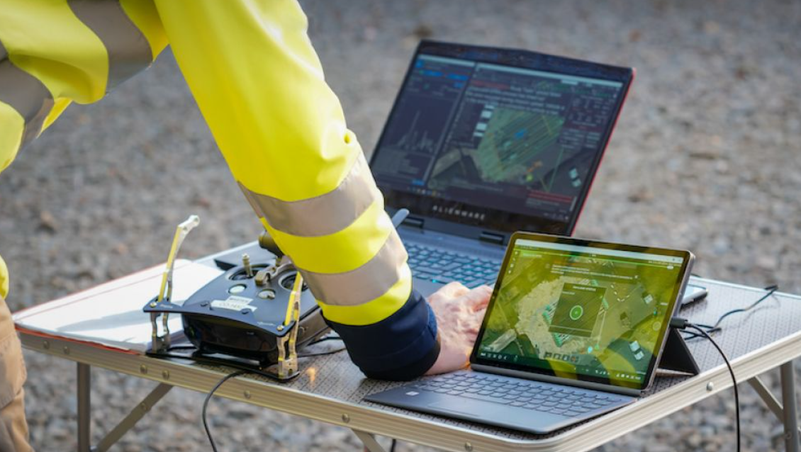
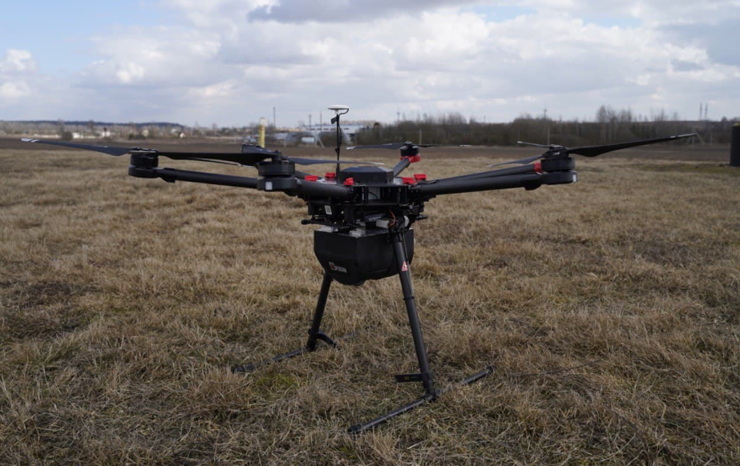

Casos de Estudio
Tecnología UAV para Detección y Monitoreo de Metano

Mediciones de Metano con UAV en Bélgica
SkyeBase y SPH Engineering implementaron un sistema de detección de metano con drones DJI M600 equipados con sensores Laser Falcon, logrando inspeccionar ubicaciones de difícil acceso en tuberías de gas natural con precisión GPS.
Leer caso completo

Gazprom Implementa Detectores de Metano en Drones
Pergam-Engineering y CROC desarrollaron software para monitoreo de fugas en gasoductos usando UAVs, reduciendo costos operativos 10 veces comparado con helicópteros. Sistema implementado comercialmente por Gazprom en 2019.
Leer caso completo